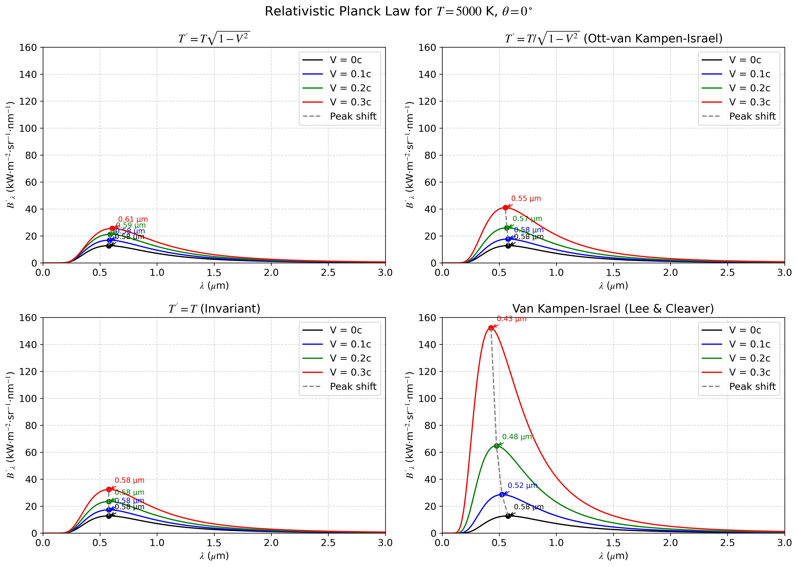

Research and Projects
Relativistic and Nonextensive Generalizations of Planck’s Blackbody Radiation Law
MSc Thesis Supervisor: Dr Zeeshan IqbalMy MSc thesis presents a theoretical study of generalizations of Planck’s blackbody radiation law under relativistic thermodynamics and nonextensive statistical mechanics.
The study systematically compares Einstein-Planck, Ott, and Landsberg theories, along with the van Kampen–Israel covariant framework. It also applies Tsallis entropy to blackbody radiation, deriving a nonextensive Planck law with entropic index q.
Key Contributions:
- Derived modified blackbody radiation formulas using multiple relativistic temperature transformation theories.
- Showed how the van Kampen–Israel covariant approach preserves thermodynamic consistency and relativistic covariance better than traditional models.
- Extended Planck’s law to the framework of nonextensive statistical mechanics using Tsallis entropy.
- Provided comparative plots of classical vs. relativistic vs. nonextensive spectra in high-energy regimes.
Plots:


Tools & Methods:
- Programming & Computation: Python (NumPy, SciPy, SymPy, Matplotlib), Jupyter Notebook.
- Mathematical/Theoretical Frameworks: Relativistic statistical mechanics (Einstein–Planck, Ott, Landsberg, van Kampen–Israel), Nonextensive statistical mechanics (Tsallis entropy).
- Documentation: LaTeX for typesetting, BibTeX for references.
Exploratory Data Analysis for Machine Learning
IBM Course Capstone Project Hotel Booking Cancellation AnalysisThis project is the capstone for the IBM Exploratory Data Analysis for Machine Learning course. It is a key component of the IBM Machine Learning Professional Certificate, offered on Coursera.
Objective: To identify the primary drivers behind hotel booking cancellations and provide data-driven insights to improve revenue management.
The Problem: A high volume of booking cancellations leads to significant revenue loss and operational inefficiencies for hotels. Understanding the root causes is the first step to mitigating them.
Approach: I performed an end-to-end Exploratory Data Analysis (EDA) on a dataset of 119,000 hotel bookings. The process involved:
- Cleaning the data and engineering new features for analysis.
- Visualizing trends across guest demographics, timing, and booking channels.
- Statistically testing key hypotheses to confirm their impact on cancellations.
Key Findings:
- Lead Time is Key: Bookings made further in advance are significantly more likely to be canceled.
- Seasonality Matters: Cancellation rates fluctuate significantly throughout the year, with distinct peaks and troughs.
- Segment Risk: Certain market segments, like 'Groups', have a much higher propensity to cancel than others.
- Overall Rate: The analysis confirmed a high cancellation rate of 37%, underscoring the importance of this issue.
Conclusion: This analysis pinpointed critical factors influencing cancellations, providing a foundation for targeted strategies such as adaptive deposit policies and tailored marketing to reduce financial loss and stabilize revenue.
Tools & Methods:
- Python & Key Libraries: Utilized Pandas for data cleaning and manipulation, and Matplotlib/Seaborn for data visualization.
- Data Preprocessing: Addressed missing values, removed outliers, and performed feature engineering to prepare the dataset for analysis.
- Statistical Analysis: Conducted hypothesis testing (t-tests) and correlation analysis to validate the impact of key factors on cancellations.
- Exploratory Visualization: Created various charts and maps to uncover trends in cancellation rates across time, customer segments, and lead times.
Quantum Solution to a Harmonic Oscillator
September 2024 QSite Hackathon 2024 - Classiq Open ChallengeThis project was solution to the Classiq open challenge for QSite Hackathon 2024, which involved the practical implementation of a theoretical quantum algorithm to solve a harmonic oscillator differential equation, addressing a core challenge in quantum computing: translating complex theory into executable code.
The Challenge: The task was to implement a 2020 research paper by Tao Xin, et al., using the Classiq platform to solve the equation
Methodology & Execution: The solution followed a structured quantum algorithm pipeline:
- Problem Transformation: The second-order differential equation was transformed into a first-order linear system suitable for quantum simulation.
- Quantum Circuit Design: A circuit was built using work qubits to represent position and velocity, and ancilla qubits to control the system's time evolution through controlled rotation gates.
- Simulation & Analysis: The circuit was executed on a simulator, and the results were decoded to calculate the kinetic and potential energy of the system over the time interval [0, 1].
Key Results & Conclusion:
The quantum simulation successfully produced results that reflected the expected oscillatory behavior of a harmonic oscillator. The measured states of the qubits allowed for the evaluation of the system's energy, validating the quantum algorithm as a viable method for solving differential equations and demonstrating a practical application of quantum computing for simulating physical systems.
Tools & Technologies:
- Python: Primary programming language for algorithm implementation.
- Classiq Platform: End-to-end quantum software platform for design and optimization.
- Jupyter Notebook: Interactive development environment for quantum programming.